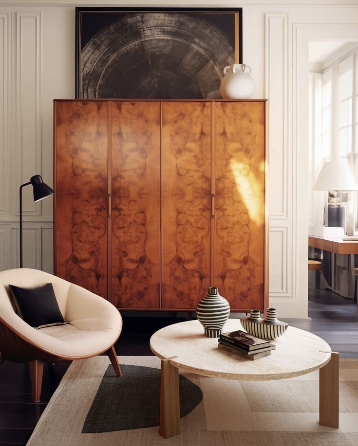

Our Renaissance Story
Where the art of coffee meets the soul of sculpture in a celebration of classical craftsmanship and modern creativity.
Our Artistic Journey
BREW & SCULPT started as a passion project between two university friends - a barista champion and a classical sculpture artist. Inspired by Renaissance salons, we began with pop-up events in local markets, combining coffee service with art exhibitions that celebrated the marriage of functional and fine arts.
Our first events featured live sculpture demonstrations alongside specialty coffee tastings, creating a unique multi-sensory experience that quickly gained attention in Cape Town's creative community.
We opened our first small café in a restored heritage building in Woodstock, featuring exposed brick walls, classical archways, and custom-made display niches for sculptures. The space quickly became a hub for local artists, writers, and coffee enthusiasts seeking inspiration.
Our unique concept of pairing each coffee blend with a featured sculpture gained recognition, with local media calling us "a modern Renaissance salon for the digital age."
Moved to our current larger location in the city center, featuring expanded gallery space, enhanced coffee training facilities, and a dedicated sculpture garden. The new space incorporates classical design elements with modern functionality, creating an authentic Renaissance atmosphere.
To date, we've supported over 50 local artists, hosted 12 major exhibitions, and become a recognized platform for emerging talent in South Africa's art scene while maintaining our commitment to coffee excellence.
Meet Our Artisans
The passionate creators behind the BREW & SCULPT experience
Sarah Chen
Head Barista & Co-founder
National Barista Champion 2022 with 8 years of specialty coffee experience. Sarah curates our coffee menu, develops signature blends inspired by classical art periods, and trains our barista team in the art of coffee preparation as a form of creative expression.
Marcus Johnson
Art Curator & Co-founder
Graduate of Michaelis School of Fine Art with a specialization in Renaissance sculpture. Marcus manages our artist relationships, gallery exhibitions, and ensures diverse and compelling artwork that complements our coffee experience while pushing creative boundaries.
Lerato Mbatha
Café Manager
Hospitality management graduate with a passion for creating memorable customer experiences. Lerato manages day-to-day operations, coordinates events, and ensures every visitor feels the warm, inspiring atmosphere that makes BREW & SCULPT a destination.
Our Renaissance Values
🎨 Artistic Excellence
We champion the Renaissance ideal of mastery in craft. Whether in coffee preparation or sculpture creation, we pursue excellence with passion and dedication, honoring traditional techniques while embracing innovation.
🌿 Sustainable Craft
Ethically sourced coffee beans, compostable packaging, and support for environmentally conscious artists. We believe beautiful art should also be responsible art, creating a legacy we can be proud of.
🤝 Community First
Following the Renaissance tradition of patronage and collaboration, we prioritize local partnerships and create space for creative collaboration, community events, and supporting emerging talent.
"Coffee is the art we drink; sculpture is the art we see. At BREW & SCULPT, we believe both should inspire the soul and celebrate the Renaissance spirit of beauty in everyday life." — The BREW & SCULPT Artisans